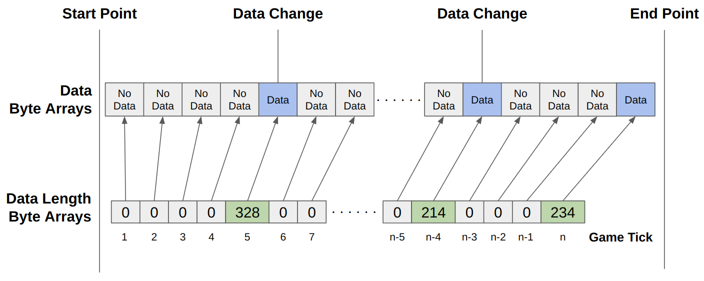

Replay tutorial
If the action space of game is complex like Starcraft, it is impossible to train the agent using only Deep Reinforcement Learning. Therefore, human expert data is needed to train the agent the various action first. However, the amount of data generated at each second is excessively large at real time game unlike the Go board game. To solve such a problem, the collected data should be converted into binary format and stored instead of directly stored. There are various methods for this, but in UoService, replay data is compressed and saved using the MoPaQ format mainly used by Blizzard. Furthermore, there is a need to investigate by loading and rendering saved game data, and UoService also provides a Python program for this.
The program basically shows the player basic information, skill, and buff information, which should be used by the agent to determine the action within the game, on the left screen at every game step. Next, it visualizes land/static, mobile, and item information around the player in actual game ratio at middle screen. Information on backpack, equipped, and vendor items is displayed on the right side of the screen. The cliloc data, which is all text information generated in the game, is displayed in order at the bottom of the screen. Finally, the pop up menu, bank item information is located in the free space on the right side of the center screen.
MPQ (MoPaQ) archive format
The code for the MQP is already open-sourced for the C# and Python. Therefore, they could be applied into UoService easily.Figure1: Replay File.
Replay file composition
Because game information does not always change, it is inefficient to store state data of every game tick. For example,if there will be no need to receive GrpcPlayerObject data if the player does not move. Of course, this method requires another array to store the length of the data. However, this method has an advantage than saving the main data array because a single int value is enough to store the length.Figure2: Replay File Composition.
Code 1: Read the data from MPQ file.
from mpyq import MPQArchive
archive = MPQArchive("kimbring2-2023-6-29-17-35-47.uoreplay")
## The length byte array for data array
playerObjectArrayLengthArr = archive.read_file("replay.metadata.playerObjectLen");
worldItemArrayLengthArr = archive.read_file("replay.metadata.worldItemLen");
worldMobileArrayLengthArr = archive.read_file("replay.metadata.worldMobileLen");
popupMenuArrayLengthArr = archive.read_file("replay.metadata.popupMenuLen");
clilocDataArrayLengthArr = archive.read_file("replay.metadata.clilocDataLen");
playerStatusArrayLengthArr = archive.read_file("replay.metadata.playerStatusLen");
playerSkillListArrayLengthArr = archive.read_file("replay.metadata.playerSkillListLen");
staticObjectInfoListLengthArr = archive.read_file("replay.metadata.staticObjectInfoListArraysLen");
actionArrayLengthArr = archive.read_file("replay.metadata.actionArraysLen");
## The actual data as byte array
playerObjectArr = archive.read_file("replay.data.playerObject");
worldItemArr = archive.read_file("replay.data.worldItems");
worldMobileArr = archive.read_file("replay.data.worldMobiles");
popupMenuArr = archive.read_file("replay.data.popupMenu");
clilocDataArr = archive.read_file("replay.data.clilocData");
playerStatusArr = archive.read_file("replay.data.playerStatus");
playerSkillListArr = archive.read_file("replay.data.playerSkillList");
staticObjectInfoListArr = archive.read_file("replay.data.staticObjectInfoList");
actionArr = archive.read_file("replay.data.actionArrays");
Code 2: Parse the main data using length array.
_playerObjectArrayOffset = 0
_playerObjectList = []
def GetSubsetArray(index, lengthList, offset, arr):
# Crop the part of array when the length is variable. Return the modifed offset value for next cropping.
item = lengthList[index]
startIndex = offset
subsetArray = arr[startIndex:startIndex + item]
offset += item
return subsetArray, offset
playerObjectSubsetArray, _playerObjectArrayOffset = GetSubsetArray(step, playerObjectArrayLengthList,
_playerObjectArrayOffset,
self.playerObjectArr)
grpcPlayerObjectReplay = UoService_pb2.GrpcPlayerObject().FromString(playerObjectSubsetArray)
_playerObjectList.append(grpcPlayerObjectReplay)
Code 3: Obtain the player object information from replay data.
if _playerObjectList[replay_step].gameX != 0:
player_game_x = _playerObjectList[replay_step].gameX
player_game_y = _playerObjectList[replay_step].gameY
© Original page design come from GodotAIGym.